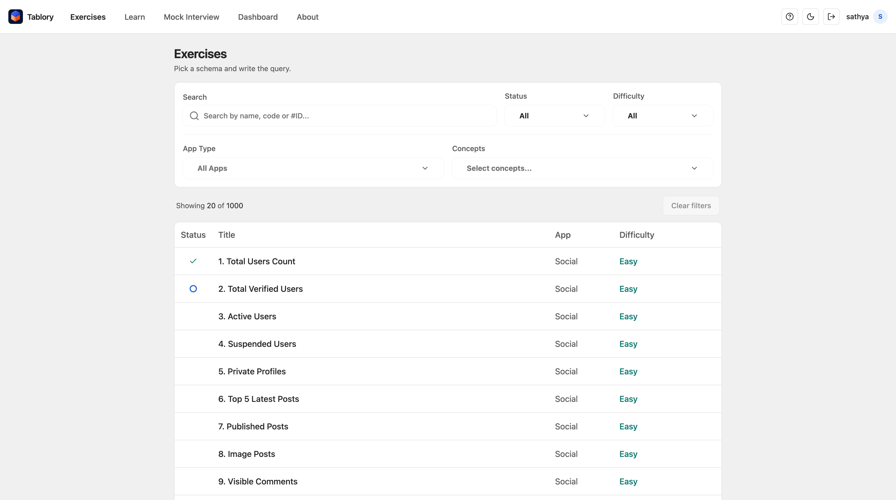
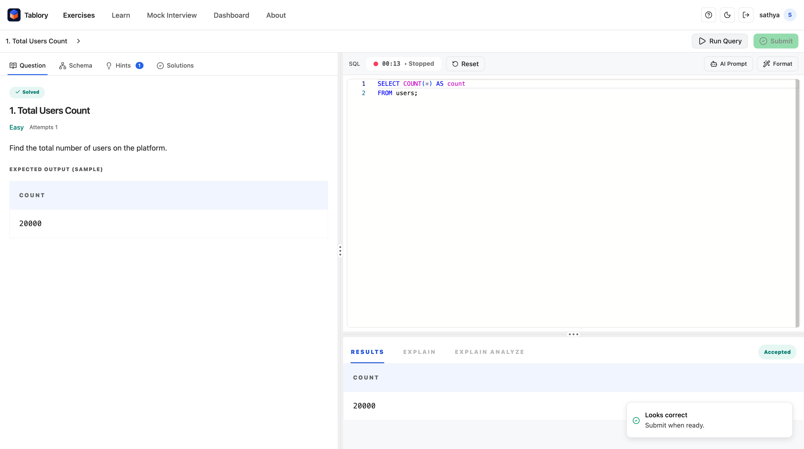
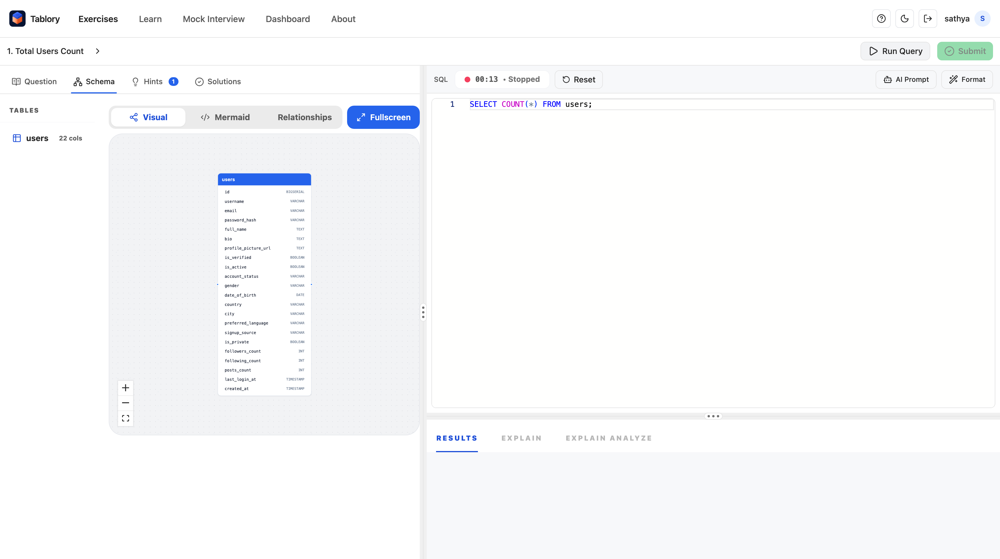
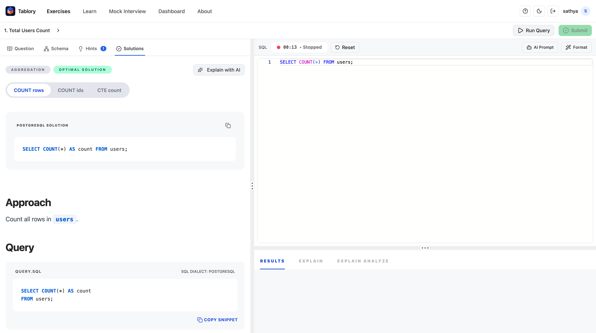
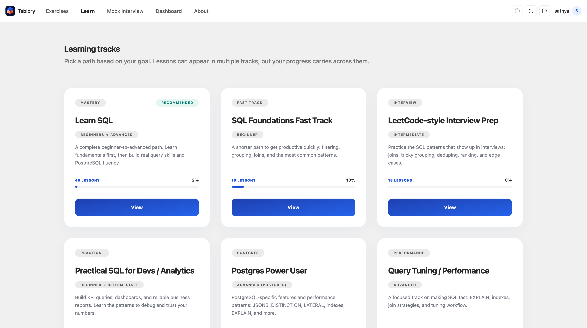
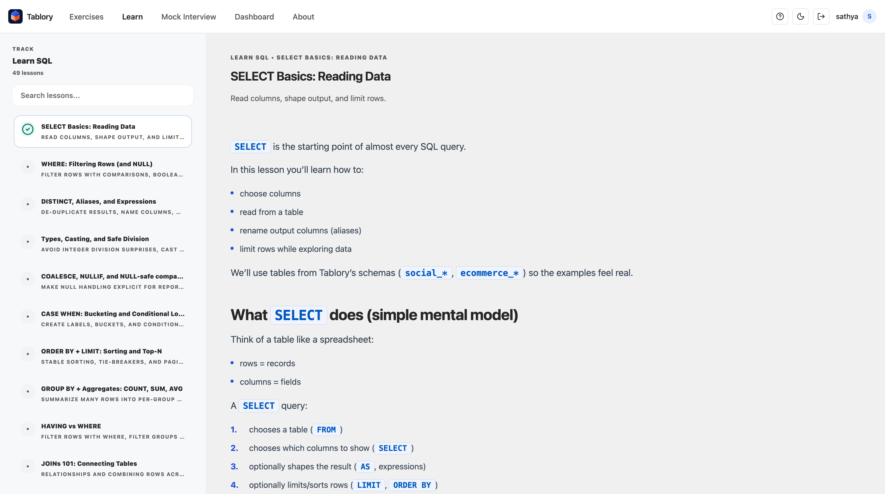
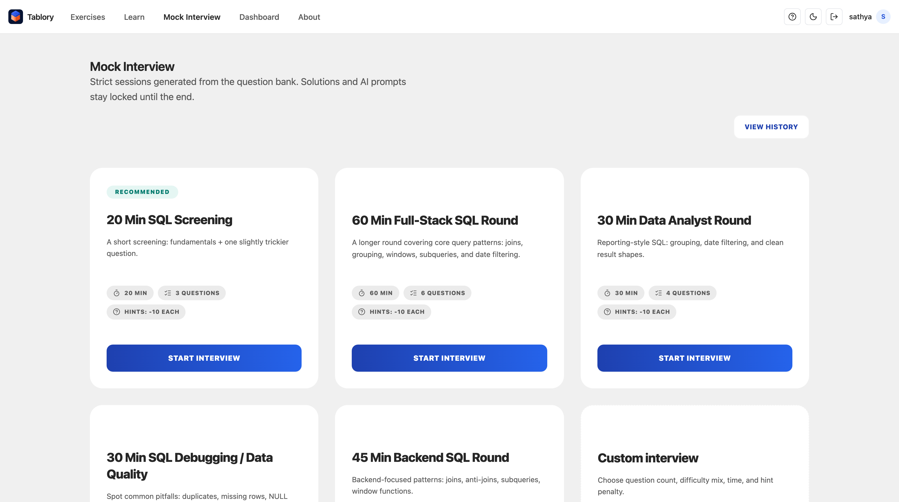
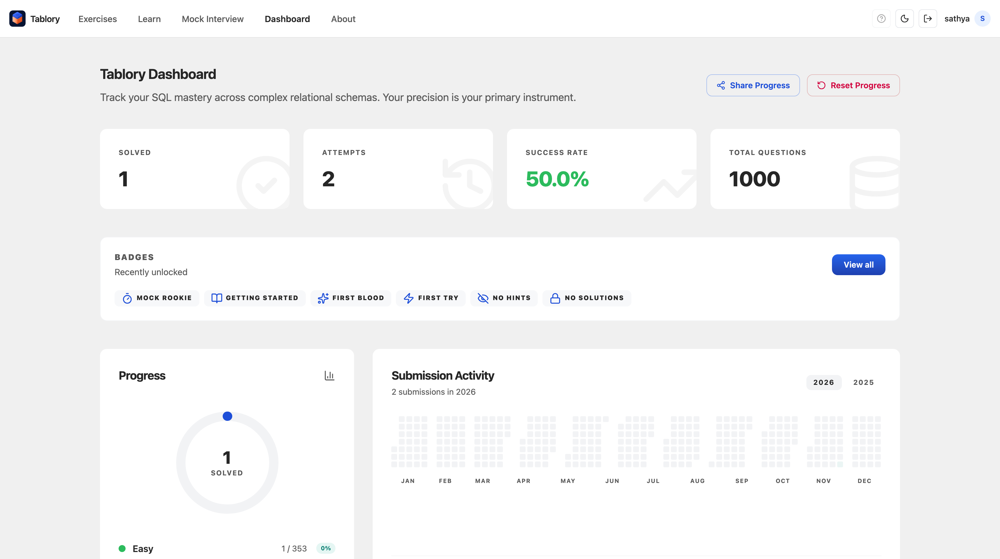

Use them in this order when you sit down to practice.

Start here. Filter the bank by status, difficulty, app, or concept, then open a question.

Read the prompt, write SQL in the editor, and run it against the real schema. Submit when the result matches.

Open Schema before you guess table names. Check columns, types, and relationships, or switch to Mermaid.

After a solve, compare approaches. Read the explanation, then copy a snippet if you want to study the pattern.

Pick a path for your goal. Lessons can sit on more than one track, and progress carries across them.

Read the concept, keep the track outline beside you, and mark the lesson as you go. Examples use the same schemas as the exercises.

Start a timed round. Solutions and AI prompts stay locked until the session ends. View History shows past rounds.

Check solved, attempts, and success rate. Badges and the activity grid show what you have already earned.